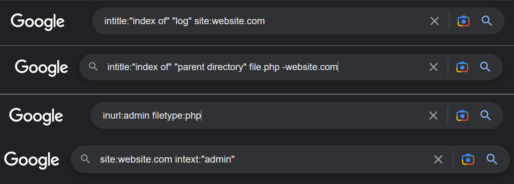
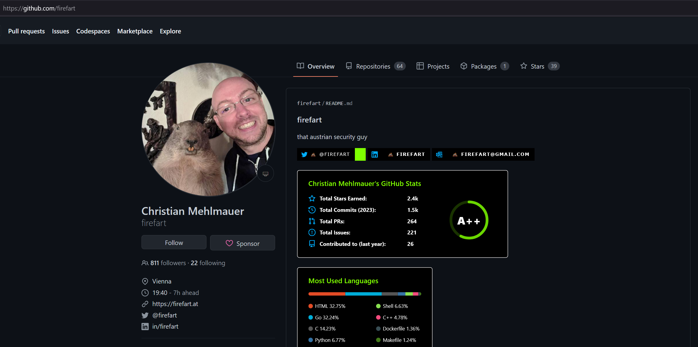
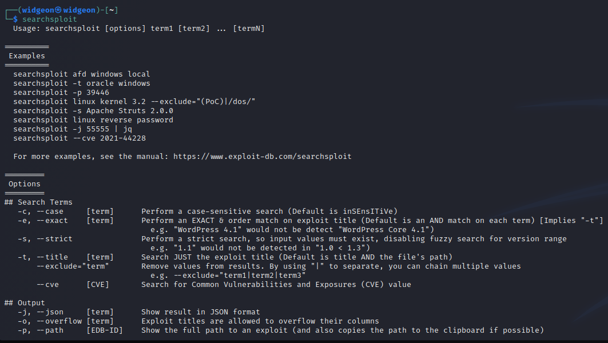

Google Tips: Passive
Techniques and tricks to make google searches more efficient
1. Use Google Dorking Techniques:
• Use advanced search operators
• To search for pages containing the phrase "remote code execution" on the website "website.com", use the search term: "remote code execution site:website.com".
• To search for pages with the word "exploit" in the title, use the search term: "intitle:exploit".

2. Use CVE-IDs as Search Terms:
• Try looking for newer CVE's if you're working on an up to date system by typing in "CVE 2021/2/3
• Try looking for CVE's related to the product, for example, Apache CVE
3. Use Exploit Keywords
• Search for exploit keywords that fit your scenario, unauthenticated file upload or Remote Code execution
• If you see 'Spring Framework' you can start looking for exploits you may have read about in the news such as 'Spring4Shell'
4. Search for vulnerability databases:
• To search the National Vulnerability Database for information about a known vulnerability, go to https://nvd.nist.gov/vuln/detail/<CVE-YEAR-NUMBER>.
5. Search for Security Blogs and Forums:
Blogs: https://thehackernews.com/
Forums and Social Media: IppSec,
John Hammond
6. Keep up with the Latest News:
• To search Google News for the latest news about CVEs and exploits, use the search term: "CVE exploit news".
7. Use Caution when Searching:
• Do not run code you find without verifying it first
• Do not get too caught up in any rabbit holes. Sometimes it will benefit you to step away and take a break.
8. Search for Github
• Many security researchers will put their work publicly on github. You can find information about CVE's, code, exploits, POC's, and many tools all off of github.
Google Tips: Active
Once you have gathered some information about the target with nmap, there's a few key things you can add to your google searches to find information.
Version Number:
Many minor releases fix a potential CVE. Look for specific versions to narrow down your search.
Type of Vulnerability:
You may be able to infer some information about the type of vulnerability you need. XSS, RCE, authenticated vs unauthenticated. Little clues that may give you a bit more focus on your search.
Vector:
How/where will this be used to gain access. Example, File upload, POST to api, phishing email, XXS, SQL injection.
Proof of Concept (POC):
Look for github or other websites (hackerone) where someone may have posted a POC. You can attempt to modify existing code rather than researching and developing the exploit yourself. If someone has already posted the exact exploit you need, no need to write one yourself.
Exploit Code:
Do any databases like vulndb have any existing code you can use or modify to fit your needs? Check searchsploit!
Google is your friend and so are the other security researchers out there who do the work that we can then use.
 